class: center, titleslide <br><br> # Python Workshop: # Handling data with Pandas <br> ## <a href="http://www.tiesdekok.com" target="_blank">Ties de Kok</a> ## Tilburg University --- layout: true class: mainlayout <div class='custom_footer'><span>Python Workshop | Handling data with Pandas | Ties de Kok (© 2018)</span></div> --- class: tocslide .left-column[ ## Pandas<br>Library ] .right-column[ 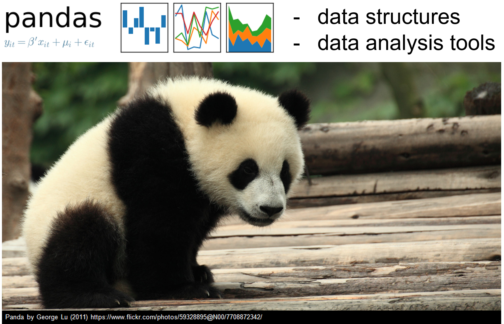 ] --- class: tocslide .left-column[ ## Pandas<br>Library ] .right-column[ 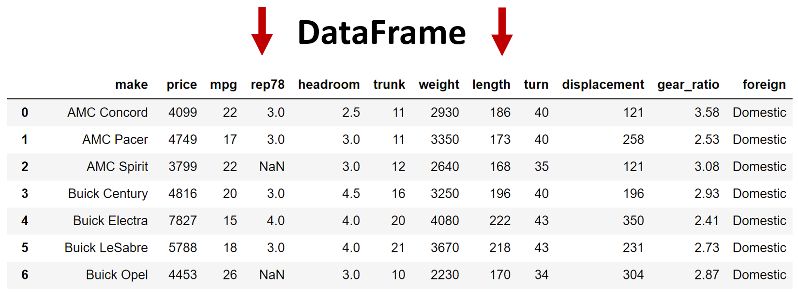 ] -- .right-column-next[ 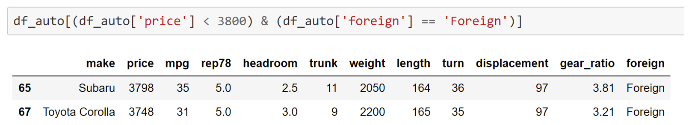 ] --- class: tocslide .left-column[ ## Pandas<br>Library ## Agenda ] .right-column[ ### What are we going to do this session <span style="display: block; padding-top: 1px"></span> 1. Terminology 2. Specific topics: - Open files - Saving files - Navigating dataframe - Select data - Create new columns - Merge data - Groupby operation - Plotting with Pandas - Plotting with Seaborn ] --- class: tocslide .left-column[ ## Pandas<br>Library ## Agenda ## Terminology ] .right-column[ ## Terminology <span style="display: block; padding-top: 1vh"></span> ### Pandas vs. Numpy Numpy provides a powerful N-dimensional array object. <span style="padding-left: 20px" class="arrow-right"></span>Pandas builds upon the Numpy functionality. ] -- .right-column-next[ <span style="display: block; padding-top: 30px"></span> ### pd.DataFrame vs. pd.Series A Pandas Series is a 1D data structure (like a vector) A Pandas DataFrame is a 2D data structure (like a matrix) <span style="padding-left: 20px" class="arrow-right"></span>Columns and rows in a DataFrame are Series. ] --- class: tocslide .left-column[ ## Open data ] .right-column[ ## Opening data Pandas can open pretty much any data file! <span style="display: block; padding-top: 10px"></span> 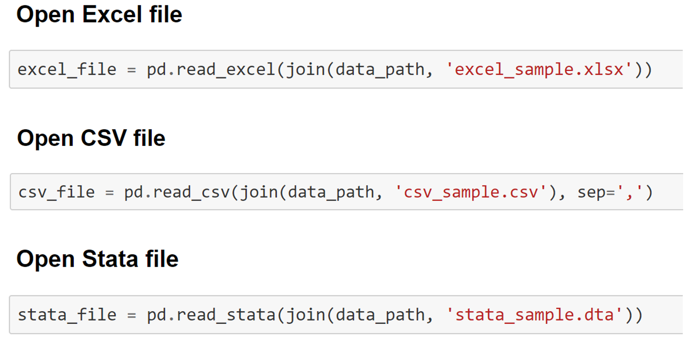 <span style="padding-left: 20px" class="arrow-right"></span><a href="https://nbviewer.jupyter.org/github/TiesdeKok/LearnPythonforResearch/blob/master/1_opening_files.ipynb">Opening and Saving files with Pandas notebook</a> ] --- class: tocslide .left-column[ ## Open data ## Save data ] .right-column[ ## Saving data Pandas can save to pretty much any data file! (except SAS) <span style="display: block; padding-top: 10px"></span> 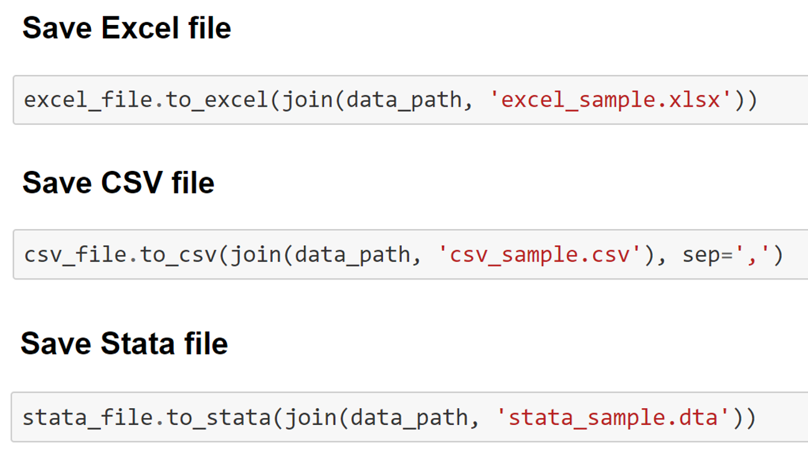 <span style="padding-left: 20px" class="arrow-right"></span><a href="https://nbviewer.jupyter.org/github/TiesdeKok/LearnPythonforResearch/blob/master/1_opening_files.ipynb">Opening and Saving files with Pandas notebook</a> ] --- class: tocslide .left-column[ ## Open data ## Save data ## HDF files ] .right-column[ ## HDF files <span style="padding-left: 20px" class="arrow-right"></span>Tip: HDF files are awesome! 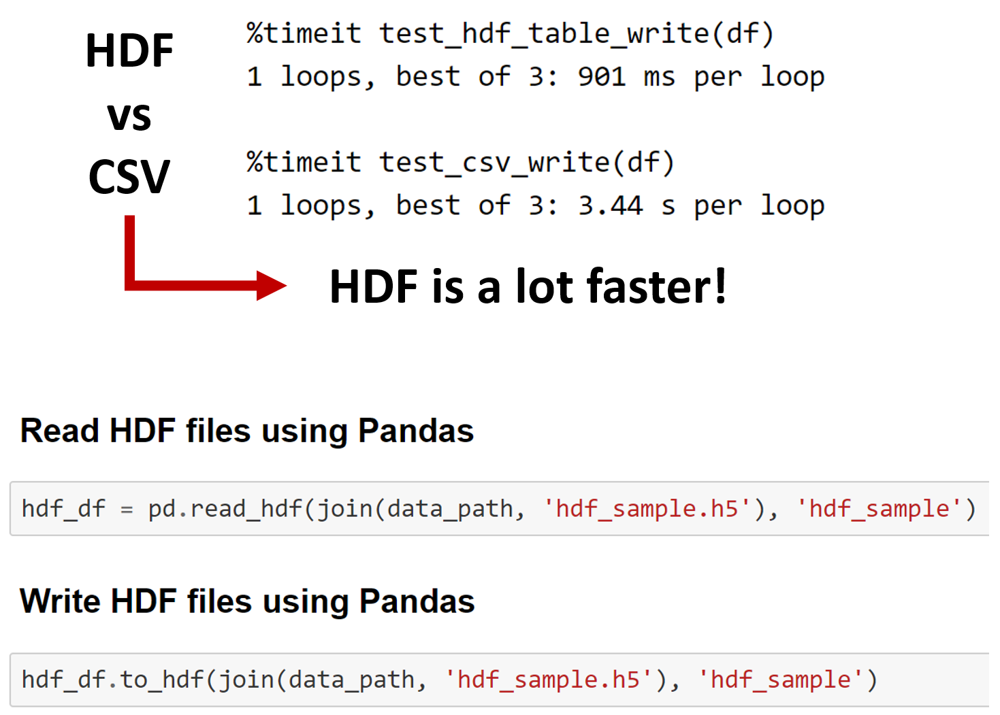 ] --- class: tocslide .left-column[ ## Open data ## Save data ## Navigate ] .right-column[ ## How to inspect your data? <span style="display: block; padding-top: 1vh"></span> <span style="padding-left: 20px" class="arrow-right"></span>There is no standard data browser for DataFrames ## My recommendation Use basic operations to view parts of the data in the notebook: 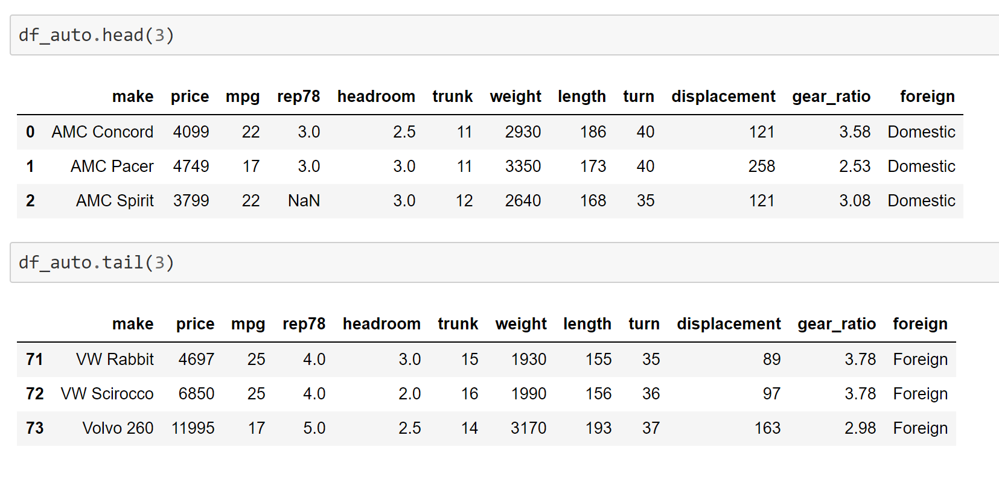 ] --- class: tocslide .left-column[ ## Open data ## Save data ## Navigate ] .right-column[ ## Alternative, use the QGrid extension <img style="position: relative; top:0px; left: 00px;" src="images/filtering_demo.gif", width=100%> ] --- class: tocslide .left-column[ ## Open data ## Save data ## Navigate ## Select data ] .right-column[ ## Selecting data <span style="display: block; padding-top: 1px"></span> 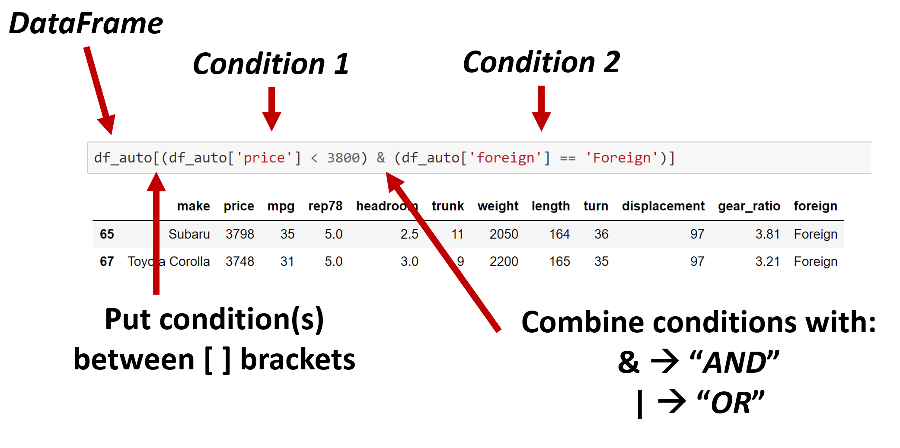 <span style="padding-left: 20px" class="arrow-right"></span><a href="https://nbviewer.jupyter.org/github/TiesdeKok/LearnPythonforResearch/blob/master/2_handling_data.ipynb#Select-based-on-condition ">Selecting data based on a condition, Jupyter Notebook</a> ] --- class: tocslide .left-column[ ## Open data ## Save data ## Navigate ## Select data ## Create<br>Columns ] .right-column[ ## Creating columns <span style="display: block; padding-top: 1px"></span> 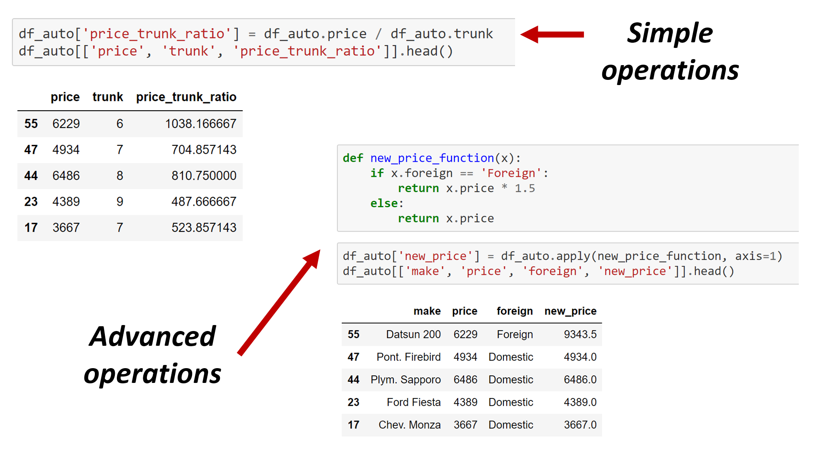 <span style="padding-left: 20px" class="arrow-right"></span><a href="https://nbviewer.jupyter.org/github/TiesdeKok/LearnPythonforResearch/blob/master/2_handling_data.ipynb#Generate-a-new-column-by-iterating-over-the-dataframe-per-row ">Various methods to create columns, Jupyter Notebook</a> ] --- class: tocslide .left-column[ ## Open data ## Save data ## Navigate ## Select data ## Create<br>Columns ## Merge data ] .right-column[ ## Merging DataFrames <span style="display: block; padding-top: 1px"></span> 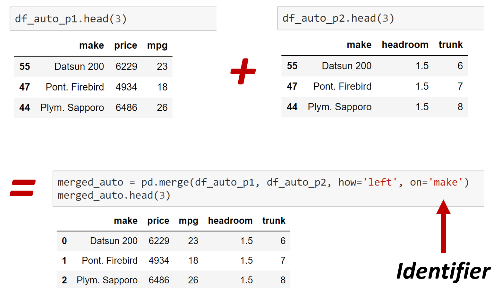 <span style="padding-left: 20px" class="arrow-right"></span><a href="https://nbviewer.jupyter.org/github/TiesdeKok/LearnPythonforResearch/blob/master/2_handling_data.ipynb#1)-Merge-datasets ">Various methods to merge, join, and append, Jupyter Notebook</a> ] --- class: tocslide .left-column[ ## Open data ## Save data ## Navigate ## Select data ## Create<br>Columns ## Merge data ## GroupBy<br>Operation ] .right-column[ ## GroupBy Operations <span style="display: block; padding-top: 1px"></span> 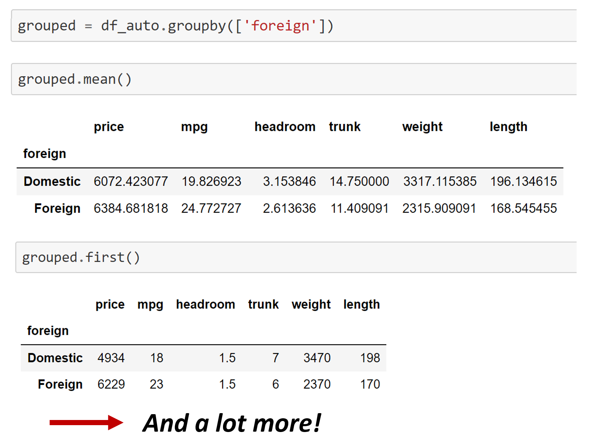 <span style="padding-left: 20px" class="arrow-right"></span><a href="https://nbviewer.jupyter.org/github/TiesdeKok/LearnPythonforResearch/blob/master/2_handling_data.ipynb#Group-by-operations-(to-top) ">Various methods to merge, join, and append, Jupyter Notebook</a> ] --- class: tocslide .left-column[ ## Save data ## Navigate ## Select data ## Create<br>Columns ## Merge data ## Groupby<br>Operation ## Plotting ] .right-column[ ## Plotting data (Pandas and Seaborn) <span style="display: block; padding-top: 1px"></span> 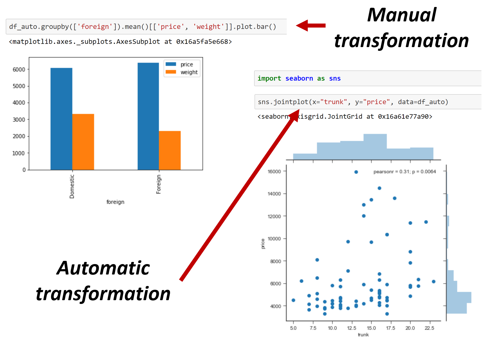 <span style="padding-left: 20px" class="arrow-right"></span><a href="https://nbviewer.jupyter.org/github/TiesdeKok/LearnPythonforResearch/blob/master/3_visualizing_data.ipynb ">Comprehensive notebook for plotting with Pandas</a> ] --- class: tocslide .left-column[ ## Closing<br>remarks ] .right-column[ <span style='position: relative; text-align:center; font-size: 28pt; left:200px;'><b>Questions?</b></span> ] --- class: tocslide .left-column[ ## Closing<br>remarks ## Demonstration ] .right-column[ <span style='position: relative; text-align:center; font-size: 28pt; left:250px;'><b>Demonstration</b></span> <img style="position: relative; top: 10px; left:40px;" src="images/start_coding.jpg", width=90%> ] --- class: tocslide .left-column[ ## Closing<br>remarks ## Demonstration ## Mini-Task<br>Instructions ] .right-column[ ## Mini Task **Goal:** Get hands-on experience with Pandas on a real-life dataset. ### Instructions 1. Open (start) a Jupyter Notebook in the `UW_python_2018` folder 2. Solve tasks in: `Materials > Session_2 > pandas_mini_task.ipynb` *Feel free to also work on:* `Session_1 > basic_python_tasks.ipynb` ### For help: - <a href="https://github.com/TiesdeKok/LearnPythonforResearch">Python tutorial</a> - <a href="https://nbviewer.jupyter.org/github/TiesdeKok/LearnPythonforResearch/blob/master/0_python_basics.ipynb">Python Basics Notebook</a> - <a href="https://nbviewer.jupyter.org/github/TiesdeKok/LearnPythonforResearch/blob/master/1_opening_files.ipynbb">Opening files with Python / Pandas</a> - <a href="https://nbviewer.jupyter.org/github/TiesdeKok/LearnPythonforResearch/blob/master/2_handling_data.ipynb">Data handling with Pandas</a> ]